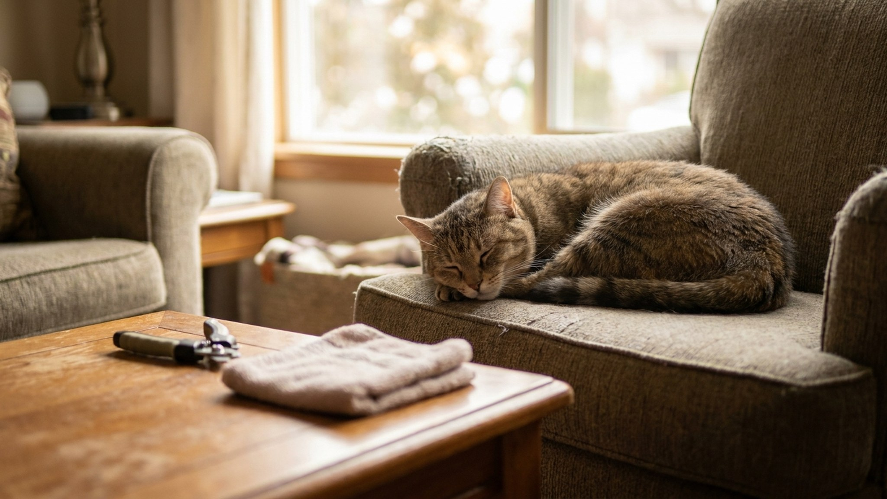

Как стричь когти кошке: пошаговая инструкция без стресса

30 мая 2026 · 7 минут чтения · Уход · Кошки
Большинство хозяев не стригут кошке когти вообще — и думают, что так правильно. Это не так. Слишком длинные когти загибаются и врастают в подушечку, цепляются за ковры и ткань, ломаются с болью. Разбираем инструменты, анатомию, технику и самое главное — как приучить кошку, чтобы это не превращалось в битву.
Зачем вообще стричь когти домашней кошке
Дикий кот стачивает когти о деревья, камни и землю при охоте. Домашний кот — нет. Когтеточка помогает, но полностью не заменяет стрижку: она снимает внешний слой (чехол), но не укорачивает сам коготь.
Длинный коготь у домашней кошки — это набор проблем:
- Коготь загибается по дуге и может врасти в подушечку лапы — это больно и чревато воспалением.
- Кошка цепляется когтями за ковёр, плед или трикотаж, дёргается и ломает коготь — чаще всего с болью и кровотечением.
- Царапины от длинных когтей глубже и болезненнее — особенно актуально, если в доме дети.
- У пожилых кошек когти медленнее стачиваются и становятся грубее и толще — без стрижки они деформируются.
Передние когти растут быстрее задних — их стригут чаще. Задние у многих кошек можно вообще не трогать, если кошка активна и хорошо ухаживает за ними сама.
Как часто стричь
Стандартная частота для передних лап — раз в 2-3 недели. Задние — раз в 4-6 недель, иногда реже. Это ориентир: у одних кошек когти растут быстрее, у других медленнее. Ориентируйтесь не на календарь, а на визуальный осмотр.
Признаки того, что пора стричь:
- Коготь визуально загибается за подушечку.
- Слышен цокот когтей по твёрдому полу при ходьбе.
- Кошка часто цепляется за текстиль.
- При надавливании на подушечку и выдвижении когтя видно, что кончик явно выходит за розовую зону сосуда.
Анатомия когтя: где сосуд и почему это важно
Это самое важное, что нужно знать перед первой стрижкой. Коготь кошки состоит из двух зон:
- Роговая оболочка — прозрачная или полупрозрачная часть, которую стригут. Нервов и сосудов нет, боли нет.
- Квик (quick) — розовый сердечник внутри когтя. Здесь проходит кровеносный сосуд и нерв. Отрезать нельзя — будет кровь и боль.
У кошек со светлыми когтями квик хорошо виден: розовый треугольник внутри прозрачного когтя. Стригите, отступив 2-3 мм от кончика квика. У кошек с тёмными когтями квик не виден — стригите только самый кончик (1-2 мм), по чуть-чуть, несколькими срезами.
Если у кошки все когти тёмные — первый раз лучше попросить грумера или ветеринарного техника показать, где граница.
Какой инструмент выбрать
На рынке три основных типа:
- Когтерез-гильотина — классика и оптимальный выбор для большинства кошек. Лезвие входит в петлю, коготь продевается, нажатие — ровный срез. Не давит на коготь в стороны, не крошит. Минус: лезвие затупляется, менять раз в год.
- Когтерез-ножницы (щипцы) — удобны для людей с маленькими руками или для котят. Принцип похож на ножницы с изогнутыми лезвиями. Требуют острых лезвий — тупые давят коготь и крошат его.
- Электрический шлифовщик когтей — не режет, а стачивает. Нет риска задеть квик одним движением, срез гладкий. Но: шум и вибрация пугают большинство кошек сильнее, чем когтерез. Подходит для кошек, которых долго и терпеливо к нему приучали.
Обычные маникюрные ножницы или кусачки для людей — не подходят. Они давят коготь, вместо того чтобы резать, что больно и создаёт трещины.
Пошаговая техника
Лучшее время — когда кошка сонная и расслабленная: после еды или игры, когда сама пришла и легла рядом. Не ловите кошку специально.
- Шаг 1. Возьмите кошку на колени или положите на твёрдую поверхность спиной к себе. Можно завернуть в полотенце, оставив одну лапу.
- Шаг 2. Слегка надавите на подушечку лапы большим и указательным пальцами — коготь выдвинется.
- Шаг 3. Найдите квик (розовую зону). Убедитесь, что лезвие когтереза направлено так, чтобы отрезать только прозрачный кончик.
- Шаг 4. Уверенным одним движением — щёлк. Не пилите, не делайте полуразрезы. Один чёткий срез.
- Шаг 5. Похвалите кошку. Угостите лакомством. Переходите к следующему когтю.
Не обязательно стричь все когти за один раз. Если кошка начала нервничать — остановитесь, дайте отдохнуть. Лучше за два подхода, чем в борьбе. Котята и взрослые кошки запоминают опыт: если первые стрижки были спокойными, потом всё проще.
Что делать, если задели сосуд
Случается даже с опытными грумерами. Кошка дёрнулась, лезвие соскользнуло — кровь. Это не катастрофа.
- Прижмите к ранке кусочек чистой ваты или марли на 1-2 минуты — кровь остановится.
- Можно приложить кровоостанавливающий карандаш (нитрат серебра) или обычную муку, крахмал — они ускоряют свёртывание.
- В аптечке хорошо иметь «Kwik Stop» или аналог — специальный порошок для остановки кровотечения из когтя.
- Не мочить лапу несколько часов.
- Кошка, скорее всего, лизнёт ранку — это нормально и даже помогает.
Если кровь не остановилась за 5-10 минут — обратитесь к ветеринару. Но такое бывает крайне редко.
Как приучить кошку к стрижке когтей
Главная ошибка — начинать сразу с когтереза. Сначала кошка должна привыкнуть к манипуляциям с лапами в принципе.
- Этап 1 (1-2 недели). Просто берите лапу в руку, слегка нажимайте на подушечку, выдвигая когти. Сразу отпускайте. Давайте лакомство. Повторяйте каждый день.
- Этап 2 (ещё 1-2 недели). Показывайте когтерез. Давайте его нюхать. Кликайте им рядом с кошкой, но не стригите. Лакомство после каждого контакта.
- Этап 3. Стригите один-два когтя. Большая похвала. Лакомство. Заканчивайте на позитиве.
Котят приучить значительно легче, чем взрослых кошек. Если взяли котёнка — начинайте с первых недель жизни дома, пока когти ещё мягкие и стричь почти нечего. Кошка привыкнет к манипуляции и потом не будет воспринимать её как угрозу.
Альтернативы стрижке: когтеточки и антицарапки
Когтеточка — обязательный элемент квартиры с кошкой. Она помогает снять верхний роговой слой (чехол) когтя, поддерживает психологическое здоровье кошки (метка территории), снижает скорость роста когтя. Но стрижку не заменяет. Это дополнение, не альтернатива.
Антицарапки (силиконовые колпачки на когти, «Soft Claws» и аналоги) — спорный инструмент. Плюсы: защищают мебель и людей от царапин. Минусы: кошка не может нормально пользоваться когтями — это инструмент защиты, пометки, расчёсывания. Кошки в когтевых колпачках испытывают стресс, особенно поначалу. Часть слизывает и глотает колпачки.
Мнение: антицарапки оправданы в конкретных ситуациях — например, если кошка живёт с тяжелобольным человеком, которому нельзя получать царапины. В остальных случаях достаточно регулярной стрижки и правильно расставленных когтеточек.
Мифы о стрижке когтей
- «Когти отрастают острее после стрижки» — нет. Это миф, пришедший из бритья. Коготь растёт из основания, форма кончика не влияет на новый рост.
- «Когтеточки достаточно, стрижка не нужна» — нет. Когтеточка снимает слой, но не укорачивает коготь.
- «Кошки, гуляющие на улице, не нуждаются в стрижке» — частично. Уличная кошка стачивает когти, но полностью заменить стрижку асфальт и земля не могут. Проверяйте передние лапы.
- «Стричь когти кошке больно» — нет, если делать правильно. Боль возникает только при попадании в квик. Роговая часть лишена нервов.
- «Лучше отдать к грумеру» — не обязательно. Стрижка когтей — простая процедура, которую любой хозяин может освоить дома за 2-3 попытки. Стресс от поездки к грумеру зачастую больше, чем от домашней процедуры.
← Все статьи · Открыть AnimaLife в Telegram · RSS